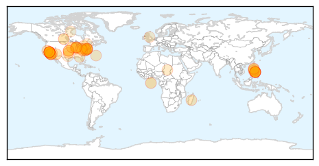

30 Day Trends
Web: 23 alerts, 4 warnings
Twitter: 3 alerts, 0 warnings
Top Articles:
- 0.992
- CDC: California Measles Outbreak Matches Philippines Strain
- 0.990
- The Measles Outbreaks: An International Issue of Public Health
- 0.989
- Disney measles outbreak may have originated in the Philippines
- 0.989
- Measles cases appear in Washington state
- 0.976
- Disneyland measles cases genetically similar to Philippines outbreak
- 0.971
- Disneyland measles similar to Philippines cases
- 0.969
- Health director: Help prevent measles in Jasper County
- 0.967
- Measles have been reported in Canada
- 0.967
- Disneyland measles virus identical to type found in PH
- 0.960
- Measles Outbreak In California May Have Origins In The Philippines
- 0.956
- Villanova nursing professor advises parents on steps to take to prevent measles
- 0.951
- Kingsport Times-News: Outbreak causes vaccination debate to heat up
- 0.942
- OSDH encourages vaccinating for measles
- 0.936
- HEALTH: Measles patient may have exposed public to the disease
- 0.930
- What You Need To Know About The Measles Outbreak
- 0.920
- UCLA Warns More than 160 Patients About Dangerous 'Superbug' Exposure
- 0.919
- Disneyland Measles Outbreak Linked To Philippines
- 0.915
- UC schools to require immunizations
- 0.910
- Health official says Kane County has no measles cases
- 0.904
- No vaccines, no treatment – Orange County, Calif., pediatricians to parents
- 0.894
- County kindergarten vaccination rate lower than state average
- 0.893
- D.C. health officials won't release info on latest measles case
- 0.893
- No measles outbreak, Health dep’t says
- 0.880
- How Hospitals are Responding to Measles Outbreak
- 0.874
- Measles vaccinations should be up to date for spring break, warns health officer
- 0.869
- The danger of skipping vaccines
- 0.865
- Concerned parents attend forum on measles
- 0.864
- Required shots mean few military measles cases
- 0.849
- Valley vaccine clinic attracts four
- 0.844
- Disneyland measles may be linked to Philippines
- 0.841
- Dana Hills High School
- 0.831
- Deadly superbug outbreak at UCLA, some 200 exposed — RT USA
- 0.820
- State has second-worst measles vaccination rate in U.S.
- 0.814
- Portage Co. measles case test results still pending
- 0.814
- California health officials urge measles vaccine before spring travel
- 0.803
- Vaccination Exemptions and Outbreaks by State
- 0.792
- What the Anti-Vax Movement Doesn’t Tell You About Measles
- 0.792
- North Shore schools proactive against potential measles outbreak
- 0.773
- Outbreak of measles in California traced to PH
- 0.741
- Biggest rise in measles cases reported in Illinois
- 0.735
- The Royal Gazette:Bermuda Parenting
- 0.722
- New measles case in Niagara brings Ontario total to 17
- 0.709
- The importance of protecting against measles
- 0.709
- Hill hearing examines measles outbreak
- 0.708
- US officials urge measles vaccination
- 0.703
- Proposed bill would beef up Delaware's vaccination code
- 0.684
- Scientistis Make New Advance Against AIDS Virus
- 0.657
- News, Politics, Music, Calendar, Events in Spokane, Coeur d'Alene and the Inland Northwest
- 0.640
- Del. lawmakers address school immunization requirements
- 0.614
- Sen. Barbara Boxer slams anti-vaccination parents
Showing top 50 articles...
Top Tweets:
-
No tweets found for Feb 19, 2015
Web/News Articles

Tweets

Article Locations
Article Confidences